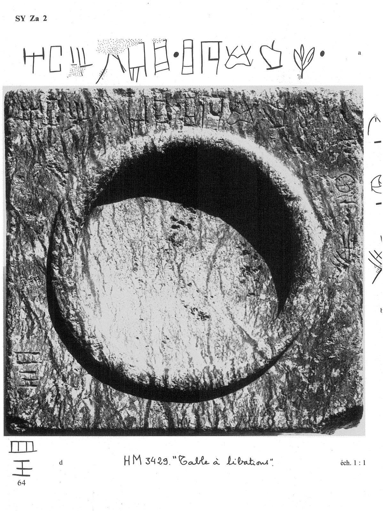

-
SYZa2
Names
SYZa2, SY Za 2
Support
Stone vessel
Location
Syme
Findspot
Unavailable

Scribe
Unavailable
Context
Late Minoan I
1600-1450 BCE
Dimensions
Catalogue
Readings
1 1 0 A none
1 1 0 TA none
1 1 0 I none
1 1 0 *301 none
1 1 0 WA none
1 1 0 JA none
1 1 1 *900 none
1 1 2 JA none
1 1 2 SU none
1 1 2 MA none
1 1 2 TU none
1 1 2 OLIV none
1 1 3 1 none
1 2 4 U none
1 2 4 NA none
1 2 4 KA none
1 2 4 NA none
1 2 4 SI none
1 2 4 OLE none
1 3 5 A none
1 3 5 JA none
𐘇𐘳𐘚𐙕𐘮𐘱𐄁𐘱𐘲𐙁𐘹𐙋𐄇𐘉𐘅𐘾𐘅𐘤𐙖𐘇𐘱
ATAI*301WAJA*900JASUMATUOLIV1UNAKANASIOLEAJA
𐘇𐘳𐘚𐙕𐘮𐘱𐄁𐘱𐘲𐙁𐘹𐙋𐄇
𐘉𐘅𐘾𐘅𐘤𐙖
𐘇𐘱
ATAI*301WAJA*900JASUMATUOLIV1
UNAKANASIOLE
AJA
SY Za 2
(HM 3429) (GORILA V: 64-65; ArchEph 2008,
197-198, 203-5), square
Libation Table (Building U, room 8; MM IIIB-LM I context; H. ca. 9.5, W.
ca. 18, H. ca. 18 cm); inscription a (side a) is across the top, facing
the
interior (left to right); inscription b is on the right side, each
sign vertical as
if oriented to a; side c carries no inscription; inscription d is on the
left side, extreme left corner, facing the interior (left to
right).
a: A-TA-I-*301-WA-JA • JA-SU-MA-TU OLIV •
b: U-NA-KA-NA-SI OLE
c:
vacat
d: A-JA
a: Brent Davis points out that *122 OLIV
strongly
resembles RE in KO
Za 1b; GORILA may have been aware of this since it draws the two signs
very similarly. The Libation Formula here has been curtailed, omitting
JA-SA-SA-RA-ME (perhaps replaced by d: A-JA) and the last three words in
the Formula. If *122 OLIV is indeed the sign after JA-SU-MA-TU, then
perhaps it is parallel to *322 OLE after U-NA-KA-NA-SI. The inscription
then blends administrative information with the dedicatory Libation
Formula.
Commentary © John Younger
References
papers/GORILA-Vol5.pdf#page=115